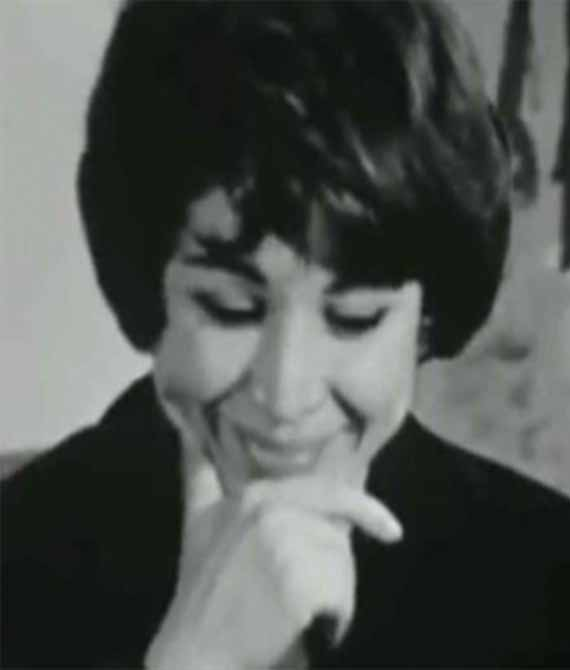
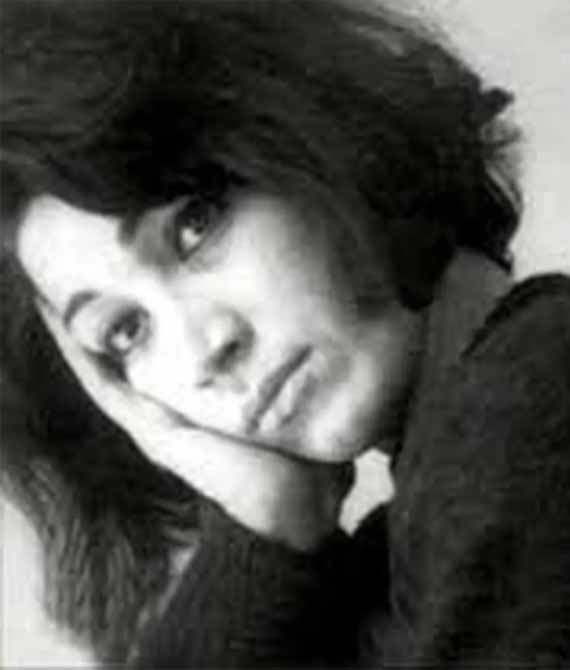

User Guide
-
User Guide
Il ForoughPedia può essere esplorato percorrendo 3 diversi itinerari,
ciascuno suddiviso in 3 fazi.
In ogni fase, gli utenti possono leggere circa 3 aspetti di Forough:
la sua vita, il suo lavoro e la sua mentalità,
nonché il palcoscenico per le informazioni sull'"After Death".
La barra dei menu consente agli utenti di accedere a tutte le pagine,
in ogni parte di ForoughPedia, inclusa la possibilità di alternare tra 3 lingue diverse:
Inglese, Italiano e Persiano (Farsi).
Si consiglia di esplorare questo sito secondo l'ordine della barra dei menu.
-

Stage 1
Durante questo periodo della vita di Forugh,
approfondiremo la sua vita personale e le sue esperienze durante l'infanzia e l'adolescenza.
La sezione “Vita” fornirà un resoconto dettagliato degli eventi e delle esperienze di questa tappa.
In "Opere" esamineremo le creazioni nate in questo periodo, comprese le sue poesie e i suoi scritti.
Inoltre, "Ideologia" chiarirà la mentalità e gli ideali di Forugh durante questa fase. -

Stage 2
Questa fase esplora la vita di Forugh durante il matrimonio,
risiedendo in diverse città e creando opere poetiche.
La sezione "Vita" descriverà in dettaglio la sua vita personale durante questo periodo.
"Opere" analizzerà durante questa fase le sue creazioni poetiche e in prosa.
Inoltre, "Ideologia" elaborerà la sua mentalità e i suoi ideali durante questa fase. -

Stage 3
Questa fase copre la vita di Forugh dopo il divorzio,
il suo ingresso nel regno del cinema e della realizzazione di documentari, fino ai suoi ultimi anni.
"Life" parlerà in modo intricato della sua vita personale durante questo periodo.
In "Opere" esploreremo i suoi contributi artistici in questa fase e "Ideologia" farà luce sui suoi pensieri e ideali durante questo periodo. -

After Death
In questa fase esaminiamo la vita e l'eredità artistica di Forugh dopo la sua scomparsa.
Questa sezione analizza a fondo la sua eredità letteraria e artistica,
il suo impatto sulla società e il suo riconoscimento postumo.